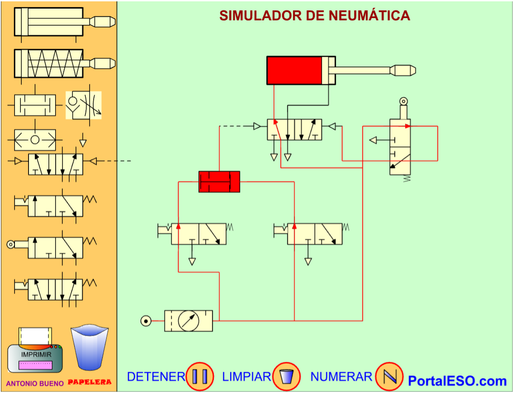
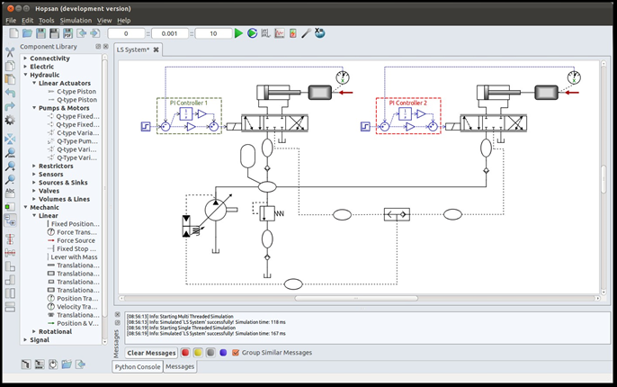

1. Introducción a la neumática¶
La neumática es la tecnología que emplea el aire comprimido como medio de transmisión de energía para mover mecanismos y máquinas.
Teoría sobre neumática¶
Simulador de neumática¶
Creado por Antonio Bueno en la página www.portaleso.com con licencia Creative Commons Reconocimiento-NoComercial-CompartirIgual 2.5 España
Simulador de neumática Hopsan¶
Hopsan es una herramienta de simulación de sistemas, open-source, desarrollada por la Universidad de Linköping.
Vídeo de circuitos neumáticos¶
- Vídeo: Circuitos neumáticos.